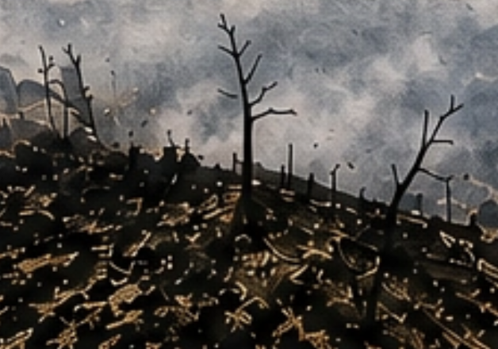
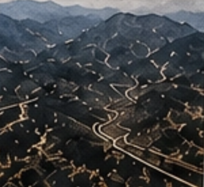
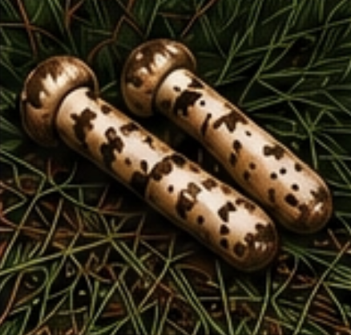

경북 산불 피해 농작물, 89.5%가 사과원
강풍을 타고 번진 불길이 의성·안동 등 국내 주요 사과 산지를 그대로 관통했어요.
물가로 먼저 만나는 산불 숲 이야기를 바로 꺼내는 대신, 미숲랭에서는 장바구니 물가에서 시작해볼까합니다! 사과값이 왜 올랐는지 따라가다 보면, 그 끝엔 산불이 있습니다.

강풍을 타고 번진 불길이 의성·안동 등 국내 주요 사과 산지를 그대로 관통했어요.

전국 사과 생산의 62%를 차지하는 경북에서 대규모 과수원이 사라지며 수급 불안 우려가 나와요.

소나무와 공생하는 송이버섯은 숲이 사라지자 자라날 자리 자체를 잃었어요. 그러자 극심한 품귀 현상이 벌어졌답니다.
산불 피해 지역이 전국 사과(73.2%)·마늘(49.0%) 생산의 큰 비중을 차지하면서 가격이 동시에 뛰었어요.

왜 하필 경북 산불이 전국 물가를 흔드나요?
경북은 전국 사과 재배면적의 62%를 차지하는, 사실상 '대한민국 사과의 산지'예요. 마늘 역시 경남·경북 지역이 전국 생산량의 절반가량(49.0%)을 책임지고 있어요! 즉, 한 지역에 생산이 몰려 있다 보니 그 지역의 산불 한 번이 전국 공급량 자체를 흔들고, 그 여파가 바로 소매가로 이어지는 구조랍니다.